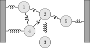

7 covariance and precision
https://en.wikipedia.org/wiki/Mahalanobis_distance
https://en.wikipedia.org/wiki/Multivariate_normal_distribution
7.1 conditional independence theorem
I have three random variables: X, Y and Z. We assume their joint probability density to by a gaussian with zero mean in all directions, and a (symmetric) precision matrix called \Lambda. We can write the pdf as
p(X,Y,Z) \propto \exp\left( -\frac{1}{2} x^T \Lambda x \right), \tag{7.1}
where x=(X,Y,Z)^T is a column vector.
Theorem 7.1 The matrix component \Lambda_{XZ}=0 iff X and Z are conditionally independent given Y. As a mathematical expression:
\Lambda_{XZ}=0 \iff X\perp Z \mid Y
Proof. Let’s write out x^T \Lambda x explicitly. Our convention is that \Lambda_{ij} denotes the matrix component in the row i and column j.
\begin{align*} x^T \Lambda x =& \begin{pmatrix}X&Y&Z\end{pmatrix} \begin{pmatrix} \Lambda_{XX}&\Lambda_{XY}&\Lambda_{XZ}\\ \Lambda_{YX}&\Lambda_{YY}&\Lambda_{YZ}\\ \Lambda_{ZX}&\Lambda_{ZY}&\Lambda_{ZZ} \end{pmatrix} \begin{pmatrix}X\\Y\\Z\end{pmatrix} \\ =& \begin{pmatrix}X&Y&Z\end{pmatrix} \begin{pmatrix} \Lambda_{XX}X+\Lambda_{XY}Y+\Lambda_{XZ}Z \\ \Lambda_{YX}X+\Lambda_{YY}Y+\Lambda_{YZ}Z \\ \Lambda_{ZX}X+\Lambda_{ZY}Y+\Lambda_{ZZ}Z \end{pmatrix} \\ =& X(\Lambda_{XX}X+\Lambda_{XY}Y+\Lambda_{XZ}Z) + \\ &Y(\Lambda_{YX}X+\Lambda_{YY}Y+\Lambda_{YZ}Z) + \\ &Z(\Lambda_{ZX}X+\Lambda_{ZY}Y+\Lambda_{ZZ}Z) \\ =& X^2 \Lambda_{XX} + Y^2 \Lambda_{YY} + Z^2 \Lambda_{ZZ} + \\ & 2XY \Lambda_{XY} + 2XZ \Lambda_{XZ} + 2YZ \Lambda_{YZ}, \end{align*}
where we used in the last step the fact that \Lambda is symmetric, therefore \Lambda_{ij}=\Lambda_{ji}.
The next step is to condition Equation 7.1 on Y. This means that we treat the random variable Y as a known number, we’ll call it y. Let’s see what happens. When we make the substitution Y=y. Let’s start with the left-hand side:
p(X,Y=y,Z) = p(X,Z|Y=y)p(Y=y).
If this looks weird, remember the fundamental equation regarding the probability of two random variables A and B:
p(A,B) = P(A\mid B)p(B).
The equation for X,Y,Z is exactly the same thing. So we learn that substituting Y=y is the same as conditioning for Y, up to a constant multiplication factor. Now let’s do the same substitution for argument of the exponent on the right-hand side:
\begin{align*} \Big[x^T \Lambda x\Big]_{Y=y} =& X^2 \Lambda_{XX} + y^2 \Lambda_{YY} + Z^2 \Lambda_{ZZ} + \\ & 2Xy \Lambda_{XY} + 2XZ \Lambda_{XZ} + 2yZ \Lambda_{YZ} \\ =& \underbrace{X^2 \Lambda_{XX} + 2Xy \Lambda_{XY}}_{f(X)} + \\ & \underbrace{Z^2 \Lambda_{ZZ} + 2yZ \Lambda_{YZ}}_{g(Z)} + \\ & \underbrace{2XZ \Lambda_{XZ}}_{h(X,Z)} + \underbrace{y^2 \Lambda_{YY}}_{\text{const}} \end{align*}
We found out that when we make the substitution Y=y in x^T \Lambda x we get a result that depends on terms that only depend on X, f(X), or only on Z, g(Z), or on both, h(X,Z), or on neither (constant):
\Big[x^T \Lambda x\Big]_{Y=y} = f(X) + g(Z) + h(X,Z) + \text{const}.
Now let’s put everything together. Substituting Y=y in Equation 7.1 gives
\begin{equation*} p(X,Z|Y=y)\cancel{p(Y=y)} \propto \exp \left[ -\frac{1}{2} (f(X) + g(Z) + h(X,Z) + \cancel{C}) \right] \end{equation*}
The two terms crossed out don’t matter, because both are constants in X and Z, and therefore can be absorbed into the proportionality symbol. We thus get
p(X,Z|Y=y) \propto e^{-f(X)/2} e^{-g(Z)/2} e^{-h(X,Z)/2} \tag{7.2}
Now it’s time to talk about conditional independence. What would take for the equation above to represent the idea that X and Z are conditionally independent? If this is true, then the left-hand size would be:
p(X,Z|Y=y) = p(X|Y=y)p(Z|Y=y).
This is the definition of conditional independence. If X is independent from Z (conditioned on Y), then the probability of both ocurring together is simply the product of their separate probabilities. The expression above also means that we are able to write the result as a product of a function that depends only on X (that is, the term p(X|Y=y)) and a function that depends only on Z (the term p(Z|Y=y)). That is to say, we can write p(X|Y=y)p(Z|Y=y) as a(X)b(Z).
We are really close to the end now, we can smell the conclusion right around the corner. If X and Z are conditionally independent (given Y), Equation 7.2 becomes
a(X)b(Z) = C e^{-f(X)/2} e^{-g(Z)/2} e^{-h(X,Z)/2}. \tag{7.3}
(Note that instead of a proportinality symbol, the right-hand side is multiplied by a constant C.)
Now I wish to show that h(X,Z) cannot be split into a neat product of something that only depends on X and something that only depends on Z, and therefore the only way to satisfy this equation is to require h(X,Z) to be zero. How to do that? Two small steps.
We will first take the logarithm of Equation 7.3: \begin{align*} A(X) + B(Z) = C + F(X) + G(Z) + H(X,Z). \end{align*}
What happened here? The logarithm turns products into sums, and we also gave new names for convenience. For instance, \log[a(X)] is also a pure function of X, therefore we called it A(X) (we re-labeled all terms in a similar manner).
The second step will be taking the mixed partial derivative \partial^2/\partial X\partial Z of the equation above. Each pure term (of only X or only Z) will vanish under this mixed partial derivative, and the only term left in the equation will be
\frac{\partial^2}{\partial X \partial Z}H(X,Z) = 0.
Now, because H(X,Z)=\ln e^{-h(X,Z)/2}, we can compute the above exactly:
\begin{align*} \frac{\partial^2}{\partial X \partial Z}H(X,Z) &= 0 \\ \frac{\partial^2}{\partial X \partial Z}\ln e^{-h(X,Z)/2} &= 0 \\ \frac{\partial^2}{\partial X \partial Z}h(X,Z) &= 0 \\ \frac{\partial^2}{\partial X \partial Z}2XZ \Lambda_{XZ} &= 0 \\ \Lambda_{XZ} &= 0 \end{align*}
This proves the first half of the iff statement: X and Z being conditionally independent implies that \Lambda_{XZ}=0. What about the other part? We want to show that \Lambda_{XZ}=0 implies that X and Z are conditionally independent. Let’s recap Equation 7.2:
p(X,Z|Y=y) \propto e^{-f(X)/2} e^{-g(Z)/2} e^{-h(X,Z)/2}
Taking \Lambda_{XZ}=0 means that h(X,Z)=0, and therefore
p(X,Z|Y=y) \propto e^{-f(X)/2} e^{-g(Z)/2}
What happens if I integrate both sides by Z? This is called marginalization (over Z). Integrating p(X,Z|Y=y) over Z gives us a new function, one that is dependent only on X: p(X|Y=y). Now, integrating the right-hand side over Z:
\begin{align*} \int_{-\infty}^{\infty} dZ (\text{right-hand side}) &= \int_{-\infty}^{\infty} dZ e^{-f(X)/2} e^{-g(Z)/2} \\ &= e^{-f(X)/2} \int_{-\infty}^{\infty} dZ e^{-g(Z)/2} \\ &= e^{-f(X)/2} \int_{-\infty}^{\infty} dZ \exp\left[-\frac{1}{2}(Z^2 \Lambda_{ZZ} + 2yZ \Lambda_{YZ})\right] \\ &\text{completing the squares...}\\ &= e^{-f(X)/2} \int_{-\infty}^{\infty} dZ \exp\left[-\frac{1}{2}\Lambda_{ZZ} \left( Z+y\Lambda_{YZ}/\Lambda_{ZZ} \right)^2 +\frac{1}{2}y^2 \Lambda^2_{YZ}/\Lambda_{ZZ}\right] \\ &= e^{-f(X)/2} \underbrace{\exp\left( \frac{1}{2}y^2 \Lambda^2_{YZ}/\Lambda_{ZZ} \right)}_{\text{constant}} \int_{-\infty}^{\infty} dZ \underbrace{\exp\left[-\frac{1}{2}\Lambda_{ZZ} \left( Z+y\Lambda_{YZ}/\Lambda_{ZZ} \right)^2 \right]}_{\text{gaussian shifted and then rescaled by }\Lambda_{ZZ}} \\ &= e^{-f(X)/2} \cdot \text{constant} \cdot \underbrace{\sqrt{\frac{2\pi}{\Lambda_{ZZ}}}}_{\text{yet another constant}} \\ &= e^{-f(X)/2} \cdot \text{constant} \end{align*}
Of course, we didn’t have to exactly solve the integral of the gaussian, we could have just realized it gives whatever constant. Anyway, it’s nice to sometimes remember what we’ve learned in 8th grade and complete the squares :)
The constant factor can be assimilated into the proportionality, giving:
p(X|Y=y) \propto e^{-f(X)/2}
The exact same argument works when marginalizing p(X,Z|Y=y) over X, it gives:
p(Z|Y=y) \propto e^{-g(Z)/2}.
From these two marginalizations we conclude that
\begin{align*} p(X,Z|Y=y) &\propto e^{-f(X)/2} e^{-g(Z)/2} \\ p(X,Z|Y=y) &\propto p(X|Y=y) p(Z|Y=y) \end{align*}
The very last step is to replace the proportionality symbol \propto by an equal sign =. We realize that if we integrate the last expression over both X and Z, both sides of the expression give exactly 1, so they are not only proportional, they are equal!
p(X,Z|Y=y) = p(X|Y=y) p(Z|Y=y)
And this concludes the counterpart: \Lambda_{XZ}=0 implies that X and Z are conditionally independent. \blacksquare
7.2 mass-spring analogy
